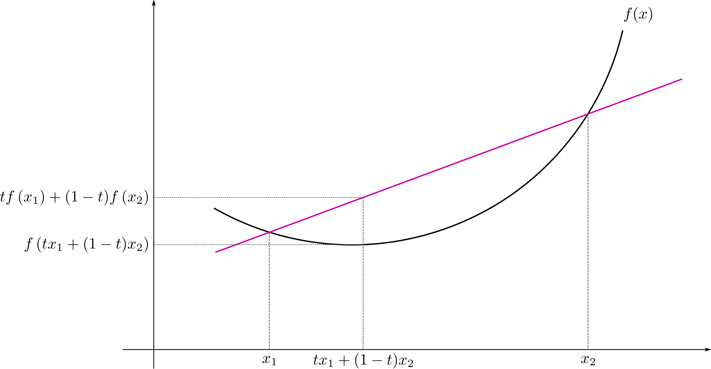
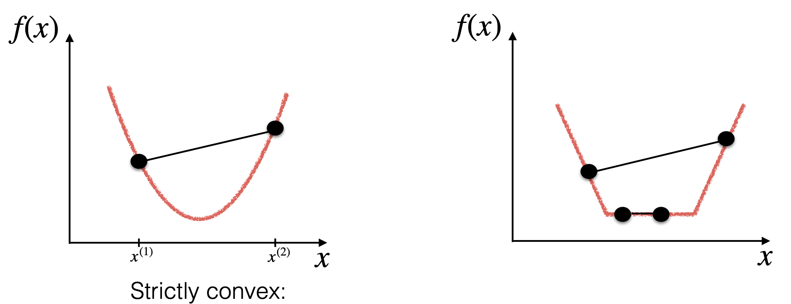
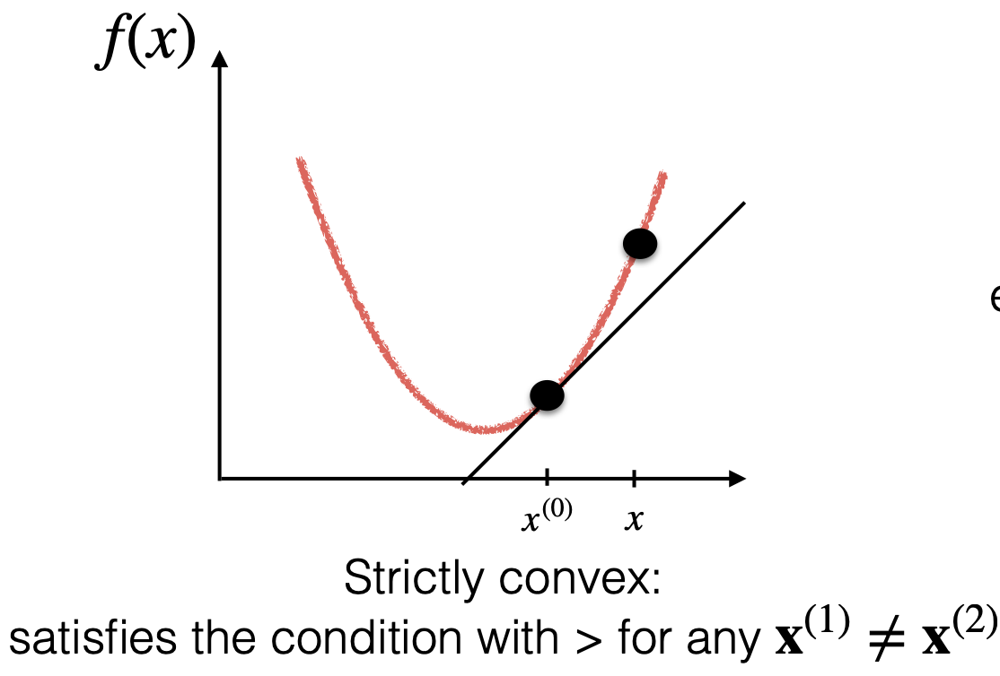
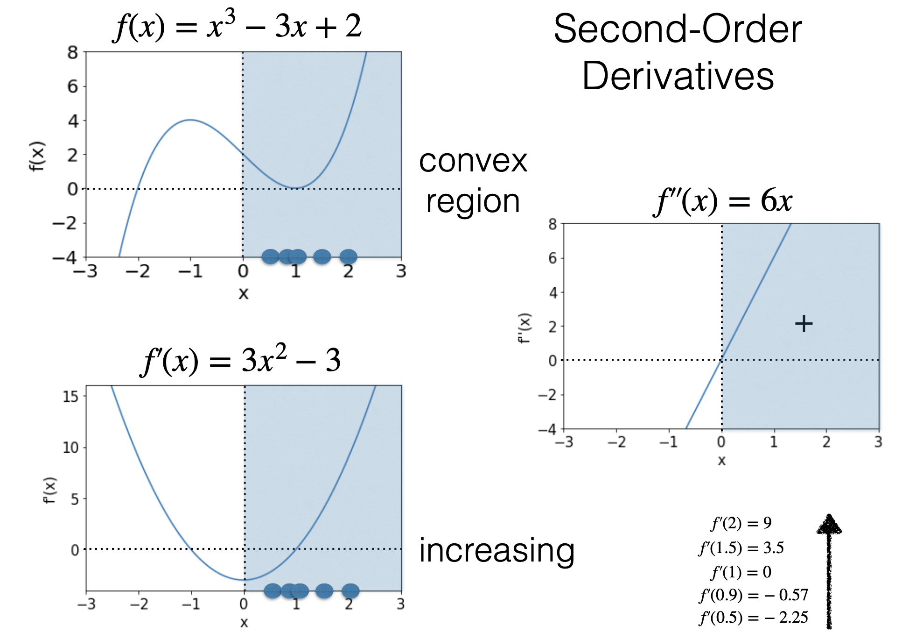

凸函数（Convex）
定义

[https://en.wikipedia.org/wiki/Convex_function#/media/File:ConvexFunction.svg]
对于所有在 定义域内的 且 ，有：
则函数 是凸函数。
而如果在此基础上，当 时，有： 则函数 是严格的凸（strictly convex）函数。
其很好理解，左侧表示函数（图中黑线）在 区域的值，右侧表示线段的线性插值（图中玫红色值）。凸函数的定义即为：在 区域，函数上的值不会超过线性插值。
 [Prof. Leandro L. Minku's slides]
凸函数有一个很有用的性质：凸函数的局部最小值也是全局最小值。
并且如果函数是严格凸的，那么局部最小值是唯一的。
而对于凹函数，只需要将不等号反过来即可。即：
1 阶导

函数 是凸函数，当且仅当对于其定义域 为凸集且所有 满足：
2 阶导
函数 是凸函数，当且仅当 是凸集并且其 （海森矩阵）对于任何 是半正定的（Positive Semidefinite, PSD）
如果（不是iff） 是凸集并且其 对于任何 是正定（Positive Definite, PD）的，则 为严格凸函数。
单变量场景

| 凸函数 | 凹函数 |
|---|---|
| 函数是凸的 | 函数是凹的 |
| 是凸的 是凹的 | 是凹的 是凸的 |
| 是严格凸的 | 是严格凹的 |
| 的局部最小值 | 是 的局部最大值 |
多变量场景
函数是凸的 iff 不再适用。
函数是凸的 iff （半正定，PSD）
半正定被定义为：
对称（symmetric）方阵（ ） 是半正定的，当且仅当：
需要注意的是，如果一个 全为正数，也可能不是PSD。存在负数也不代表不能为 PSD。